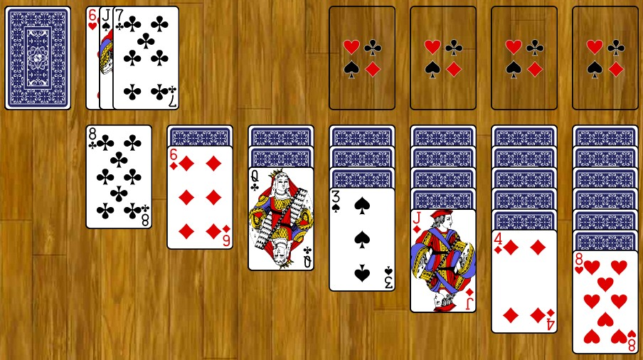

Cool Websites!
A list of cool websites that I like :3
World of Solitaire!
This is very much a time eater for me. It has 125 games, it keeps game stats, there's so much to love about this one.
Hosted using GitHub pages. Source code available here!